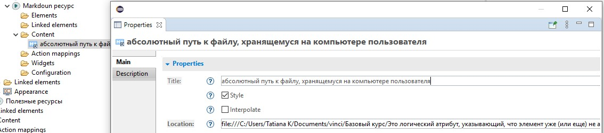
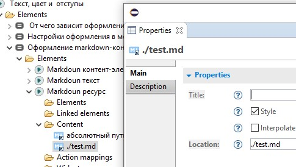

Markdoun ресурс - это файл, , имеющий расширение *.md и содержащий внутри себя текст в формате Markdoun.
Файл может храниться внутри проекта или вне проекта: на компьютере пользователя, в локальной сети, в интернете. В момент генерации сайта содержимое файла извлекается из него, преобразуется в HTML код и встраивается в страницу.
Использование маркдаун-ресурсов имеет следующие преимущества:

На вкладке Main контент-элемента маркдаун-ресурс необходимо указать путь к файлу в поле Location и установить галочку Style, если вы хотите применить к нему настройки оформления.
Необходимо учитывать, что если вы не введёте путь в поле Location или файл, на который вы ссылаетесь будет удалён, или вы неправильно сформируете ссылку на этот файл, то генерация сайта завершится с ошибкой и вам нужно будет либо указать правильный путь к файлу, либо удалить из модели маркдаун ресурс c “битой” ссылкой.
Очень важно правильно построить путь к файлу!
Если файл хранится внутри проекта - целесообразно построить относительный путь. Он должен начинаться от папки, в которой хранится ваша модель (как правило модель хранится в корневой папке проекта). В начале пути необходимо указать точку и слэш:

Если вы указываете абсолютный путь к локальному файлу - вам необходимо в начале пути написать: file:///
Если указываете ссылку на файл находящийся в сети Интернет путь должен начинаться с https://